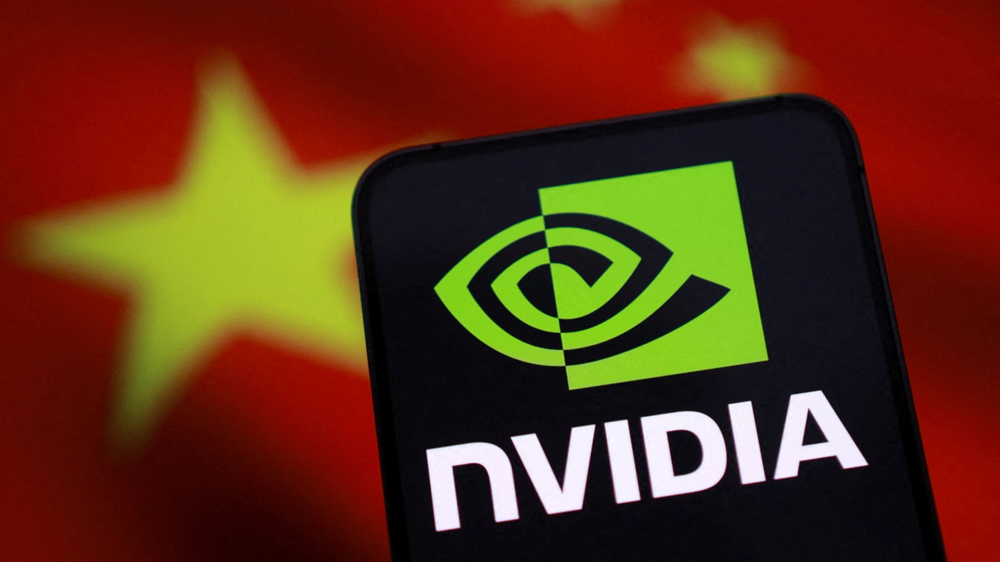
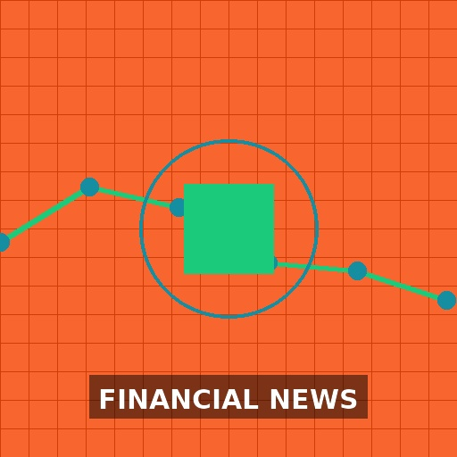

Waneye
— global vision for smarter finance
Live:Last updated: 2025-12-13 16:32 UTC
Top Financial Headlines






Financial Analysis
Financial Analysis Report
Market Score
Executive Summary
Key Highlights
- Federal Reserve cuts interest rates for third time in 2025, signaling continued dovish monetary policy
- Tech sector experiences significant selloff (S&P 500 down 1%) amid AI growth concerns and rotation to value/old economy stocks
- Market rally appears divided with defensive and cyclical sectors showing strength while tech faces pressure
- Multiple stocks approach buy points despite market volatility, indicating selective opportunities
- AI infrastructure demand continues to drive semiconductor and energy sectors
- Geopolitical tensions (Cambodia-Thai clashes) and trade policy uncertainty create headwinds
- Consumer sentiment appears weak heading into holiday season according to recent polling
- Corporate debt concerns emerge with Paramount's $54B debt and Vanke's bond extension failure
Market Sentiment
65/100
Market Insights
Sector Analysis
Technology
Significant rotation away from Big Tech/AI stocks amid valuation concerns and growth uncertainty. Oracle and Broadcom specifically mentioned as stoking AI angst. However, infrastructure plays like Nvidia (considering increased H200 output) and Dell (increasing prices on memory demand) show strength.
Potential sector rotation creating buying opportunities in oversold quality tech names while presenting risks in overvalued AI pure-plays.
Healthcare/Biotech
Mixed performance with Eli Lilly near buy points showing strength, while DexCom considered "too rich" by Cramer. ImmunityBio gains 7.76% on Europe expansion.
Selective opportunities in healthcare with focus on companies demonstrating clear growth catalysts and reasonable valuations.
Financials
Bank of Nova Scotia praised as "very good company" while real yield debate continues in credit markets. CFTC's Treasury reform paves way for crypto market expansion.
Financials may benefit from rate cut environment but face credit quality concerns. Crypto infrastructure plays gaining regulatory clarity.
Industrials/Transportation
Old Dominion, Delta, and Southwest Airlines receive positive commentary. GE Aerospace jumps 4% on buy recommendation. Rivian unveils autonomous driving ambitions.
Transportation and industrial sectors showing relative strength amid tech weakness, potentially benefiting from economic reopening and infrastructure spending.
Energy/Utilities
Green stocks benefit from tech-driven energy demand. NRG Energy praised as "very well-run." Rethinking land strategy in utility-scale solar indicates sector evolution.
Energy transition plays gaining momentum as AI/data center demand increases electricity consumption.
Consumer Discretionary
Mixed signals with Costco selling 4.5M pies but stock ticking lower. Shake Shack, Toll Brothers receive buy recommendations. Holiday shopping concerns emerge.
Selective consumer strength but overall sentiment appears cautious heading into holidays.
Key Market Themes
- Market rotation from growth to value
- AI infrastructure demand vs. AI application concerns
- Federal Reserve policy divergence (rate cuts continue but dissent emerges)
- Geopolitical tensions affecting emerging markets
- Corporate debt concerns in specific sectors
- Cryptocurrency institutional adoption accelerating
- Consumer resilience testing amid inflation concerns
- Energy transition driven by technological demand
Risk Assessment
Tech Sector Valuation Correction
Mitigation: Diversify away from pure AI plays, focus on tech companies with strong fundamentals and reasonable valuations. Consider rotating to value sectors showing relative strength.
Geopolitical Tensions
Mitigation: Monitor Cambodia-Thai situation, US-Vietnam trade talks, and broader Asia-Pacific stability. Consider defensive positioning in affected regions.
Corporate Debt Stress
Mitigation: Avoid companies with excessive leverage (Paramount example). Focus on companies with strong balance sheets and manageable debt levels.
Consumer Weakness
Mitigation: Underweight discretionary consumer stocks, focus on essential consumer goods and value retailers. Monitor holiday sales data closely.
Federal Reserve Policy Uncertainty
Mitigation: Maintain duration flexibility in fixed income. Focus on quality companies less sensitive to interest rate changes. Monitor Fed communications closely.
Strategic Recommendations
Investment Opportunities
Selectively add to quality tech names on weakness
medium-termTech selloff creating opportunities in companies with strong fundamentals and reasonable valuations. Focus on infrastructure plays benefiting from AI demand.
Increase exposure to industrial and transportation sectors
short-termThese sectors showing relative strength amid tech weakness. Benefit from economic activity and potential infrastructure spending.
Consider energy transition and green infrastructure plays
long-termAI/data center growth driving electricity demand, benefiting renewable energy and grid infrastructure companies.
Defensive Strategies
Reduce exposure to highly valued AI application stocks
short-termMarket rotation away from expensive growth stocks suggests continued pressure on pure-play AI names without clear profitability paths.
Increase cash position to 5-10% of portfolio
short-termMarket volatility and rotation create opportunities for selective deployment. Cash provides flexibility amid uncertain market conditions.
Focus on companies with strong balance sheets
medium-termCorporate debt concerns emerging in certain sectors. Companies with low leverage and strong cash flows better positioned for potential economic slowdown.
Consider defensive consumer staples and utilities
short-termPotential consumer weakness makes defensive sectors attractive. These sectors typically perform better during market uncertainty.
Market Outlook
Short-term Outlook (1-3 months)
Expect continued volatility with sector rotation dominating price action. Tech may see further pressure while defensive and cyclical sectors show relative strength. Federal Reserve policy remains supportive but dissent suggests potential policy shift ahead. Key resistance at recent highs, support at 200-day moving averages.
Long-term Outlook (6-12 months)
Structural trends in AI infrastructure, energy transition, and digital transformation remain intact despite short-term volatility. Market likely to reward companies with sustainable competitive advantages and reasonable valuations. Geopolitical risks and debt concerns may create periodic headwinds but overall economic expansion expected to continue.
Key Market Catalysts
- Federal Reserve meeting minutes and future rate decisions
- Holiday retail sales data (late December/early January)
- Q4 2025 earnings season (January 2026)
- Geopolitical developments in Asia-Pacific region
- AI infrastructure spending announcements from major tech companies
- Corporate debt market conditions and refinancing activity
Monitor Closely
- S&P 500 support at 200-day moving average
- VIX volatility index for fear gauge
- 10-year Treasury yield and Fed policy expectations
- Technology sector ETF (XLK) relative performance
- Consumer confidence and spending indicators
- Semiconductor equipment and memory pricing trends
- Bitcoin price as crypto market barometer
- Dollar strength and its impact on multinational earnings
Central Banks
US Federal Reserve - Economy at a Glance
Policy Rates
- Federal Reserve:Rate not found
- European Central Bank:Rate not found
- Bank of England:Could not fetch rate (Request Error)
- Bank of Japan:Could not fetch rate (Request Error)
- Swiss National Bank:Could not fetch rate (Request Error)
- Bank of Canada:Rate not found
- Reserve Bank of Australia:3.60%
- People's Bank of China:Rate not found
- Reserve Bank of New Zealand:Could not fetch rate (Request Error)
Key Economic Data
2025-05-20
2025-05-19
Forex CFD Quotes
| Pair | Bid | Ask | Change |
|---|---|---|---|
| EUR/USD | 1.085 | 1.0852 | -0.0002 |
| USD/JPY | 155.2 | 155.23 | 0.05 |